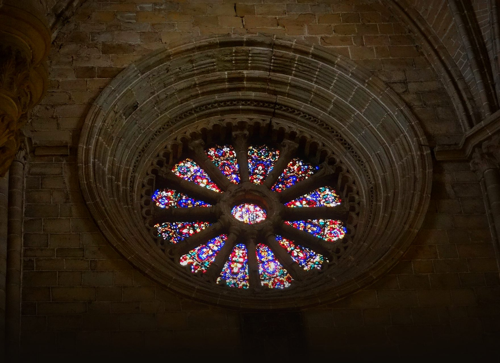

Diseño · prototipo
Una Voz
Prototipo navegable. Toca una pantalla para abrirla; dentro, los botones llevan a las siguientes. Los textos entre corchetes son datos que aún faltan.
Empezar el recorrido
Prototipo navegable. Toca una pantalla para abrirla; dentro, los botones llevan a las siguientes. Los textos entre corchetes son datos que aún faltan.
Empezar el recorrido